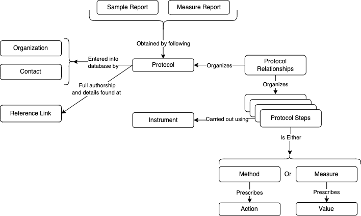

Getting to know the ODM
Dictionary v3.0.0 Documentation v2.1.0
What are “Parts” and “Part Types”?
Within the ODM, every component or element of the model and the dictionary is called a “part”. Parts are grouped into “part types”.
Because the term “parts” refers to every component of the ODM, “part types” are a way to differentiate between parts which have different functions and structures. The three most important part types are:
- Measures: A measurement or observation of any substance including a biological, physical or chemical substance.
- Methods: A procedure for collecting a sample or performing a measure.
- Attributes: A description of the who, where, when, and why of environmental surveillance.
See the parts reference document for more details.
The are additional part types to support the dictionary including:
- Aggregations
- Aggregation scales
- Categories
- Classes
- Compartments
- Dictionary support
- Domains
- Groups
- Missingness
- Nomenclature
- Quality indicators
- Specimens
- Tables
- Units
For information and details about all the part types, please see the parts reference document.
“Sets” and the rationale behind sets
“Sets” are a way of grouping together different possible categorical inputs within the ODM. The purpose behind sets is to group options together so that users only need to check a few options from a drop-down menu, rather than scroll through a long list. Sets are also designed so that a single part can be used in multiple sets, which avoids the need to create multiple versions of this part for these different use contexts. For example, if you’re taking a measure of concentration, that measure will likely populate the unit choice drop-down list with units from the “standard concentration unit set”. Units in this set include Milligrams per litre, parts per million, and Percent Primary Sludge. Similarly, if one were measuring the amount of oxygen in a wastewater sample they would be offered units from the “dissolved gas unit set”. The units in this set include parts per million, and Milligrams per litre. You see here how Milligrams per litre is used twice across the sets, but exists still as a single part in the parts list. Unit sets are only one type of set, with the others being:
- Aggregation sets
- Compartment sets
- Quality sets
- Specimen sets
Details about these sets are their similar - but unique - applications can be found in the parts reference document. Importantly, “category sets” are not considered a “set” like these others. See the section below for an explanation of this difference.
Why category sets are treated differently
One of the reasons why “sets” are set up and organized the way that they are, is to allow for the re-use of parts in multiple sets. Category sets are, however, an exception to this rule because the categories that make up a category set are used in only one set. Furthermore, the general sets are needed for almost every measure or method (which require unit, aggregation, quality, and compartment information), while category sets are used only in specific circumstances for specific fields. These are things such as collection metadata (example: Sample collection category set), dictionary metadata and model architecture (example: Data Type Category Set), or more detailed types of certain methods (example: Nucleic Acid Extraction Category Set). Category sets are also a distinct part type, and more information about them can be found in the parts reference document.
The “what” and “why” of Specimen IDs
Specimen IDs indicate the level at which a measure is being done. This can be: a site measure, ie. a measure at a site such as temperature or weather; a sample measure, ie. a laboratory measurement on a sample, such as gene copies of SARS-CoV-2 per mL; a person measure, ie. a measure of something at the level of an individual person, such as a blood pressure reading; or a population measure, ie. an aggregate measure of a population, such as the number of confirmed cases of a given illness. While there is currently nothing in version 2.0 of the ODM with uses the person specimen ID explicitly, it has been included to allow for the possibility of storing individual-level data in a future version. The reason specimen IDs were created was so that there could be a single manner in which measures and methods are recorded, regardless of the level at which they were performed, while still maintaining the possibility to collect site, sample, and population measures as a distinct types of metadata.
The “what” and “why” of Groups and Classes
Groups and classes, similar to sets, are ways of grouping together different measures within the ODM. Given that the ODM aims to be as robust as possible and has a very long list of possible measures, groups and classes were designed to give shorter lists of measures in the drop down lists by specifying details about the kind of measure that a user is recording. Groups and classes can work together to further specify what kinds of measures are being reported. For example, the group sarsCov2 contains many measures, but by specifying that the class is an allele or variant, the list of possible measures is pared down. Alternatively, class can be said to be non-applicable, paring down the measures in the sarsCov2 group to only be unspecified measures of the quantity of the virus.
Tables and table types within the ODM
Within the ODM there are three types of tables: program description tables, results tables, and look-up tables. These table types exist to differentiate the function of these tables and to highlight these differences to users. The different tables take different types of inputs and maintenance from users, so understanding the differences can be important.
Program description tables
Program description tables (represented in yellow in the ERD) are tables used to record metadata on the organizations, locations, methods, and appurtenance. These tables help to describe surveillance and testing programs, and are intended to be updated infrequently.
Results tables
Results tables (represented in blue in the ERD) are the tables used to record details on samples and measures. These tables record the main outcomes data and are updated daily, if not more frequently.
Look-up tables
Look-up tables (represented in green in the ERD) are the tables that are pre-programmed and pre-populated in the ODM. These hold information on sets, all parts, languages, and translation abilities. These are only updated by the ODM team in version updates.
Measures, Methods, and Attributes: Key parts
While there are many part types, there are three main part types users should be most familiar with: measures, methods, and attributes. These three have parallels with the three table types, and the differences and details of these parts are useful to understand.
Measures
Measures are actually types of measures that can be performed. These can range from temperature to the number of gene copies in a sample. The measure, or measureID, can be selected from a drop down in the templates and it specifies the kind of measure you intend to record. The actual value of the measure is then recorded in the value field of the measures table, with units and aggregation specified in the unitID and aggregationID fields.
Methods
Similar to measures, methods are types of methods that can be performed to accomplish a measurement. These can be diverse, ranging from incubation, qPCR, or nucleic acid extraction. The method itself (methodID) is selected from a drop down in the templates, specifying in general terms the kind of method the user wishes to record. From there, the value field of the methodSteps table can be populated by one of the inputs from the category set associated with that methodID. This provides a higher level of detail for a given method. For example, the methodID might be solidSep for solid separation of a sample. The value field might then be populated with cent for centrifugation, indicating more details about how the sample settling was done.
Attributes
Attributes are the largest category of part type, as these refer to most of the fields in the ODM. Attributes are fields for metadata within the ODM and range greatly in the use. They comprise everything from collection dates, to sampling period, to names.
Data quality and reportability
Within the ODM there is a qualityFlag field present in both the samples and measures tables. This field serves to highlight whether or not there is a quality issues with the sample or the measure. The quality flag also allows a user to specify the type of quality issue. This is managed through the use of quality sets, which are the sets that contain the possible quality flags for a given measure or for samples. The idea is that this provides data on any issues with a sample and an indication of the nature of that issue. Having data about the nature and presence of a quality issue is often not sufficient for decision makers who are trying to use and interpret the data. As such, there is also a reportable field which is a Boolean indicator of whether or not data can or should be reported or included in final reports and decisions.
Time periods for samples and measures
For measures, there is a field aDateStart and aDateEnd which specify the date and time that an analysis was begun and finished. This allows for the recording of greater detail around timelines for especially long, multi-day analyses. For shorter analyses, which will likely make up the bulk of reported measures, the same date can be inputted into both fields. The idea is to have the reporting tables for measures be as robust as possible to allow for various kinds of timelines.
For samples, there is collDT, collDTStart, and collDTEnd. The first field is for the collection date and time of a single grab sample, so start and end are not necessary and the other two fields can be left blank. For composite or pooled sample, the start and end date and time for collection is crucial information to know. When these two fields are populated, the collDT field can be left blank.
Dates within the ODM
There are a number of date fields within the ODM which all serve different purposes. Collection datetime (collDT) is the date a sample was collected, used only for grab samples. This field is left blank if the collection datetime start and end fields (collDTstart and collDTEnd) have been populated instead. Inversely, collection datetime start and end fields should be left blank if the collection datetime filed has been populated. Similarly, analysis datetime start and analysis datetime end (aDateStart and aDateEnd) are used to report the date and or timeline of an analysis for a measure.
Date fields that are more related to data processing and labratory infrastructure are: the last edited date (lastEdited) which indicates the last time a table, or a measure or sample details, were last edited or updated; the sent date (sentDate), or date that a sample was sent to the lab from the field; the received date (recDate), or the date the sample was recieved in the lab; and the report date (repDate), or the date that the analysis results or measures were reported. These give a greater indication of how up to date data is, but also on the speed and efficiency of the pipeline between sampling and reported results. Dates should be reported in day/month/year format to accommodate the most popular global convention.
Translation and language capabilities
The default language of the ODM is English, but French translations of all descriptive elements of the data model dictionary are also available. As additional nation states and partners adopt the ODM, we anticipate that these fields will be translated into other languages as well. The translation capacities are managed through the language look-up table (languageLUs), the translation look-up table (translationLUs), and the parts table (partsLUs). When a translation for a given part is not available, the dictionary will default to the English term. The language look-up table stores linguistic and classification codes for spoken human languages, with the most recent ISO639 code being the language ID (languageID). In the translation table, the language ID is paired with every part ID (partID), along with the label (partLabel), description (partDesc), and instructions (partInstr) translated to that language. The part IDs are linked to the full parts list which otherwise contains metadata that is coded in variables and requires no further translation.
Recording protocols
When analyzing data from various sources, it is important to understand how the data was produced. The PHES-ODM recognizes this and includes protocols as one of its entities. To store protocols efficiently in database tables, several challenges must be addressed:
- Protocols are comprised of a collection of steps.
- Protocol steps can consist of two entries:
They can prescribe the use of a specific quantity of something. This can be described using the different measures found in the PHES-ODM dictionary and assigning them a prescribed value and unit of measurement.
They can prescribe an action. The PHES-ODM calls this a method.
- Protocol steps must be organised in the right order to convey the meaning of the protocol.
- Steps may follow each other, or they can be done concurrently.
- Measures found inside a protocol specify the quantity of reagents, supplies and conditions involved in the realization of a method.
- Different protocols may use some of the same steps, but in a different order.
- Protocols may have steps that consist in one or several (sub)protocols.
- Protocols can be updated with new versions, or they can reference and build from other protocols.
To solve these constraints, the PHES-ODM stores a protocol (e.g., what it does, who developed it, when it was developed) separately from its constituent steps. These protocol steps are stored in the Protocol Steps table. The entries in the steps table are either methods or measures.
The protocol steps are linked together in their own Protocol Relationships table. Rows in the relationship table have four main attributes. The first is the protocol identifier. The three other attributes define a relationship between two steps in the protocol. The relationship is expressed in the form:
subject → relationship → object
Where the subject and the object can either be a protocol step or subprotocol. The available relationships (e.g., is_before, specifies, is_concurrent_with, etc.) allows one to organize the protocol in a more semantically meaningful way than by simply using a sequential order.
This flexible structure allows protocol steps and subprotocols to be reused in any number of protocols. The relationships between protocols, protocol orderings, and protocol steps are shown in Figure A.

Recommended formula for user-generated IDs
There are 13 user-generated IDs used in the ODM. These IDs are necessary unique identifiers used to organize observations and metadata. The ODM is not opinionated about IDs, and users are free to use whatever formula or naming convention they prefer for these IDs. We have prepared a recommended formula for these IDs, however, which users are free to use. These are the formulas used by the ODM tools to machine generate IDs where one hasn’t been provided. For a quick breakdown, see the below table:
| User ID | Formula | Example |
|---|---|---|
| Address ID | country code + province code + 2-3 letters of municipality + row | caOnOtt002 |
| Contact ID | orgID + first 3 letters of role | caOnOtt002UniRes |
| Dataset ID | datasetID = orgID | caOnOtt002Uni |
| Instrument ID | first 3 letters of manufacturer + first 3 letters of name + first 3 letters of model + index | fisHanHan |
| Organization ID | addID + first 3 letters of name | caOnOtt002Uni |
| Polygon ID | orgID + siteID | caOnOtt002UniCaOnOttOtt |
| Protocol ID | first 5 letters of name + protocolVersion | pmmov1 |
| Protocol Step ID | orgID + last 3 letters of part ID of method/measure | caOnOtt002UniIon |
| Quality ID | quality flag part ID + either the measure report ID, the sample ID, or measure set report ID that the quality report is for | flagJcaOnOttOttawasite1202008021000covN1002 |
| Measure report ID | sampleID + part ID of measure + row number | caOnOttOtt20200802Covn1002 |
| Measure set report ID | Report ID of first measure in the set + # measures in the set | caOnOttOtt20200801Covn1002003 |
| Sample ID | siteID + collDT/collDTEnd (not including time) + index (if applicable) | caOnOttOtt20200801 |
| Site ID | country code (ISO) + province code (ISO) + first 2-3 letters of municipality + 3 first letters of site name | caOnOttOtt |
To go into greater detail, the Address ID uses the recipe country code + province code + 2-3 letters of municipality + row. So it’s built using pieces of the metadata fields for the given address’ entry in the addresses table, and the row it occupies in that table. For example, the ID for an address in Ottawa would use Country Code = Canada, Province Code = Ontario, Municipality = Ottawa-Carleton, and lets say it’s recorded in the second row of the table, so Row = 002. This gives us an address ID of caOnOtt002.
The Contact ID in the contacts table uses the recipe organization ID + first 3 letters of role, again building the ID from pieces of the metadata. So if, for example, we are building a contact ID for a research associate at an organization with the ID caOnOtt002Uni, the contact ID would be caOnOtt002UniRes.
For the Dataset ID, we recommend it be the same as the organization ID (see below). So if, for example, we looked at our organization with the ID caOnOtt002Uni, the dataset ID would also be caOnOtt002Uni.
Instrument ID uses the same approach of building using metadata, with the recipe of first 3 letters of manufacturer + first 3 letters of name + first 3 letters of model + index to generate the ID. For example, if we wanted to record a HandyStep S Repeating Pipetter (name), manufactured by Fisherbrand, and is of the model HandyStep S Mechanical, the recommended ID that is generated would be fisHanHan.
Our recommended recipe for Organization ID uses the address ID for an organization (see above for explanation) + the first 3 letters of the name. So if the organization in Ottawa described in the address ID section was the University of Ottawa, the ID would be caOnOtt002Uni.
For the Polygon ID, the recipe uses associated IDs to generate the final product. Specifically, we recommend organization ID + site ID. So for a polygon managed by an organization using the ID caOnOtt002Uni and covering a site with the ID caOnOttOtt, for example, the polygon ID would be caOnOtt002UniCaOnOttOtt.
The Protocol ID is generated using the first 5 letters of the name + the protocol version. For example, if using generating a protocol ID for a first version of a protocol called “PMMoV Process”, the ID would be pmmov1.
For the Protocol step ID, we recommend constructing combining the organization ID + last 3 letters of the part ID for the method or measure used in the step. For example, a nucleic acid extraction method (partID = extraction) step from our university of Ottawa example lab with the organization ID caOnOtt002Uni would generate the protocol step ID of caOnOtt002UniIon.
Quality ID ia generated using the recipe of part ID for the given quality flag + either the measure report ID, the sample ID, or measure set report ID for which the quality report is being generated. Generating an example, if we are reporting the qulaity flag J - Weak signal extrapolation (partID = flagJ) for a measure report with the ID caOnOttOttawasite1202008021000covN1002, we get the quality ID of flagJcaOnOttOttawasite1202008021000covN1002.
The Measure Report ID is built using sampleID + part ID of measure + row number. For example, taking a measure of the SARS-CoV-2 N1 gene region (partID = covN1) from a sample with the ID caOnOttOtt20200801, recorded in the second row of the table, we get the measure report ID of caOnOttOtt20200802Covn1002.
The recommended recipe to generate a Measure Set Report ID is to use the Measure Report ID of the first measure in the set + the number of measures in the set. So for a set of 3 measures that starts with the same SARS-CoV-2 N1 gene region measure as described above (caOnOttOtt20200801Covn1002), you get the measure set report ID of caOnOttOtt20200801Covn1002003.
Sample ID is generated by combining the siteID for the sample + the collection Datetime OR the end of collection datetime fields (excluding the time and only using the date) + the index value (if applicable). So for a composite sample taken at a site with the ID caOnOttOtt, which finished collection on 2020-08-01 10:00:00, with no index, the sample ID would be caOnOttOtt20200801.
Lastly, a Site ID can be generated by combining the country code (ISO) for the site + the province code (ISO) for the site + first 2-3 letters of municipality + 3 first letters of site name. So to generate a site ID for the wastewater treatment plant in Ottawa, Canada, we would take the ISO code for Canada (ca), for Ontario (on), The first three letters of Ottawa-Carleton (Ott) and the first three letters of the site name, where the name is Robert O. Pickard Environmental Centre (Rob). This gives us the recommended site ID of caOnOttRob.
Questions and online community
If any users have additional questions or issues with the ODM, we invite them to check out our Discourse Page for discussion boards and community support. For larger issues, and to ask the ODM team to add additional fields or variables into the model, we encourage users to visit the project’s GitHub repository and to create and issue there so that a team member can respond.